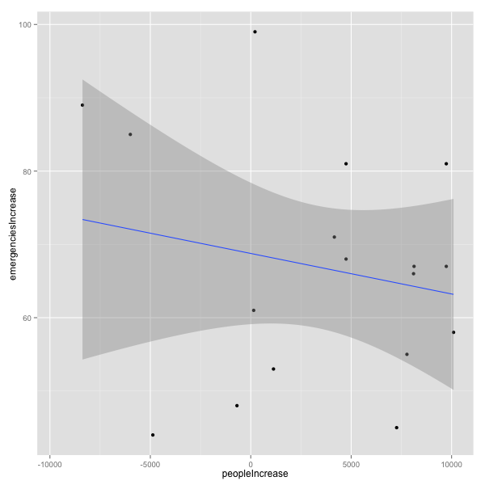

MBTA Late Night T Data Challenge
Exploring the effects of the Late Night T service on the weekends on reported crime, Mayor's hotline complaints and emergency room visits.
Introduction
We set out to explore...
The Data
The datasets that we used...
Results
After processing the data, we observed...
Complaints vs. Number of people out

Emergencies vs. Number of people out
Crime vs. Number of people out